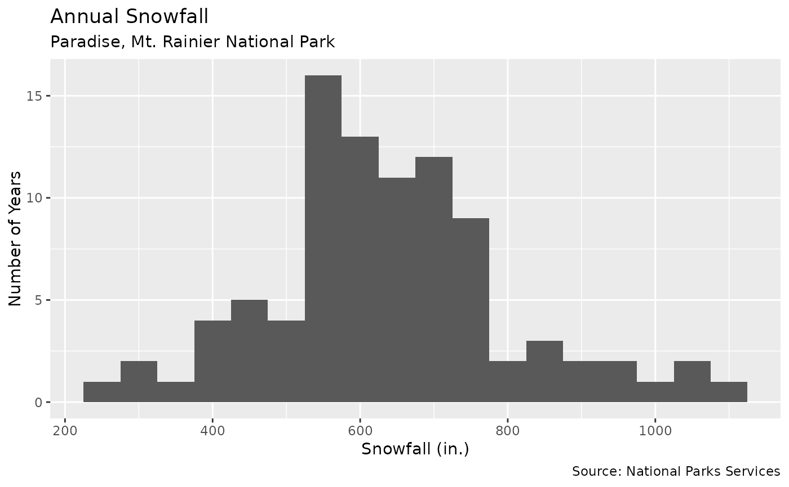
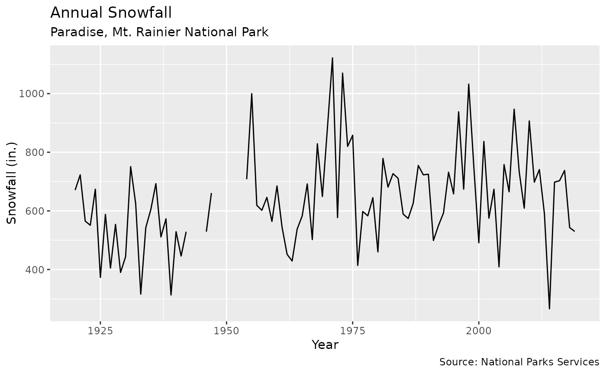

Annual snowfall data for Paradise, Mt. Rainier National Park. To include a full winter season, snowfall is recorded from July 1 to June 30. Data from 1943-1946 not available due to road closure during World War II. Records also unavailable from 1948-1954.
snowfallFormat
A data frame with 100 rows and 3 variables.
- year_start
The year snowfall measurement began on July 1.
- year_end
The year snowfall measurement ended on June 30.
- total_snow
Snowfall measured in inches.
Source
Examples
library(ggplot2)
ggplot(snowfall, aes(x = total_snow))+
geom_histogram(binwidth = 50)+
labs(
title = "Annual Snowfall",
subtitle = "Paradise, Mt. Rainier National Park",
x = "Snowfall (in.)",
y = "Number of Years",
caption = "Source: National Parks Services"
)
#> Warning: Removed 9 rows containing non-finite values (stat_bin).

ggplot(snowfall, aes(x = year_start, y = total_snow, group = 1))+
geom_line()+
labs(
title = "Annual Snowfall",
subtitle = "Paradise, Mt. Rainier National Park",
y = "Snowfall (in.)",
x = "Year",
caption = "Source: National Parks Services"
)
